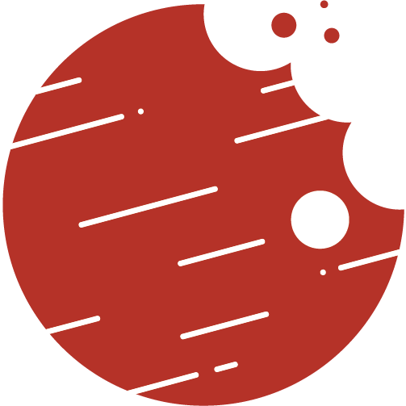

Astrobites

From 2023-2025, I was a graduate student writer for Astrobites, a collaboration of graduate students that condenses scientific articles into bite-size pieces for the public (targeting undergraduates). I am also an active member of the Climate Change and DEI Committees.
View my Astrobites
MIT Graduates Advising Graduate Admissions
I'm an active member of the Grads Advising Graduate Admissions (GAGA) group in the MIT Department of Physics, providing grad student advice on admissions. In 2024-2025, I served as co-chair. I help run the Physics Graduate Application Assistance Program (PhysGAAP), which offers webinars, office hours, and mentorship for prospective MIT Physics PhD applicants.
MIT Astrogazers
I'm a member and former co-lead (2023-2024) of MIT Sidewalk Astrogazers. Our group brings telescopes—including dobsonians, a solar (Hα), and a Unistellar eVscope—to Cambridge and Boston sidewalks for public stargazing. We also partner with organizations like the MIT Museum for special events.
Astronomy on Tap Boston
I was on the organizing committee for Boston's Astronomy on Tap, hosting events at local venues with public talks and space-themed trivia. I've helped host events since 2022. See event listings or social media for upcoming events.
Volunteering at NC Museum of Natural Sciences
In summers 2017 and 2019, I volunteered in the Astronomy & Astrophysics Lab at the North Carolina Museum of Natural Sciences. I developed and ran a "cart program" teaching guests about dark matter with hands-on tools, led solar observing sessions, and mentored a high school student in outreach activities.